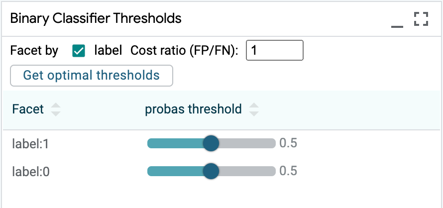

Components and Features#
Framework and Model Support#
LIT is framework-agnostic and is compatible with any model that can be wrapped in a Python class for inference. In particular, we’ve tested with TF1.x, TF2, JAX, and PyTorch, as well as models that use custom C++ inference code (wrapped via CLIF) and with remote models over RPC. In general, there aren’t any constraints beyond those imposed by the modeling platform (for example, TF1.x and TF2 models can’t coexist in the same process) or underlying hardware (such as GPU memory). For working with very large models, also see the Scale section of the FAQ.
Many LIT users implement their own model and dataset classes, but we also have out-of-the-box support for a few modeling frameworks, described below.
HuggingFace Transformers#
Many of the open-source LIT examples use HuggingFace Transformers via their TF2/Keras model classes. These give easy access to model internals such as embeddings, attention, and gradients, and the LIT wrappers for these support many interpretability methods - such as integrated gradients out-of-the-box.
These models are a great place to start for small-scale experiments or for working on academic projects.
TF1.x Estimator#
LIT supports Estimator and other TF1.x models, but the model wrappers can be
more involved due to the need to explicitly manage the graph and sessions. (In
particular: Estimator.predict() cannot be used because it reloads the model on
every invocation.) Generally, you’ll need to:
In your model’s
__init__(), build the graph, create a persistent TF session, and load the model weights.In your
predict()function, build a feed dict and callsession.rundirectly.
Alternatively, you can export to a SavedModel and load this in an eager mode
runtime. This leads to much simpler code (see
this example),
but may require changes to your SavedModel exporter in order to access model
internals like embeddings, gradients, or attention.
Remote or hosted models#
LIT can easily interact with models hosted via an RPC or HTTP endpoint,
including Servomatic. In this usage, the model weights and computation remain on
the server, while the LIT Model implementation simply manages the RPC stub and
handles format conversion and any additional pre- or post-processing.
For a general-purpose interface to connect to another LIT server over HTTP, see components/remote_model.py.
Static predictions#
LIT works best when the model can be queried interactively, but this isn’t
always possible for all situations. The
StaticPredictions
class allows LIT to serve a set of pre-computed predictions by creating a
“model” backed by a lookup table. This can be handy for quickly browsing data,
while still retaining access to LIT’s rich visualizations.
Note: StaticPredictions does not support counterfactuals or any methods such
as LIME which involve querying the model on new examples.
Data loading#
LIT can load data from almost any format, including TFRecord, Capacitor, SSTable, or even SQL queries, via a custom Python class that implements the Dataset API. Many of our demos use TFDS, and the LIT loader code is only a small wrapper class which performs minimal post-processing. See the demos page for specific examples.
Datasets can also be loaded or saved from the UI, if the appropriate methods are implemented on the dataset class. See the Workflow and Integrations FAQ for more details.
Input and Output Types#
LIT uses an extensible system of semantic types to describe data and models. This allows for flexible support of a number of different input and output modalities common to NLP and other domains. For a full reference, see the documentation of the Python API, in particular:
Below, we describe a few common model types and usage patterns. Note that while some features (such as metrics and output visualizations) are specific to an output type, many LIT features - such as datapoint exploration, side-by-side functionality, and counterfactual generation - are available for any model.
Classification#
LIT supports many features for classification tasks, including common metrics,
confusion matrices, and custom thresholding via the UI. Classification is
implemented with the MulticlassPreds and CategoryLabel types.
For a basic example on a binary sentiment task, see examples/simple_tf2_demo.py.
Models should define a
MulticlassPredsfield in their output spec with thevocab=attribute as the set of class labels, and for each example should return a vector of probabilities for each class.To provide labels for evaluation, the data should define a
CategoryLabelfield which contains string-valued labels. The model’sMulticlassPredsfield should set theparent=attribute to the name of this field.A negative class can be designated using the
null_idxattribute ofMulticlassPreds(most commonly,null_idx=0), and metrics such as precision, recall, F1 will be computed for the remaining classes. AUC and AUCPR will be computed for binary classification tasks. For an example, see the comment toxicity model.If
null_idxis set and there is only one other class, the other class (often, class1) is treated as a positive class, and the LIT UI can be used to change the classification threshold. Ifnull_idxis set and there are more than two classes, a “margin” can be set which acts as a bias (in log space) for the negative class.
{kind=link}
Regression / Scoring#
Regression or scoring models also are well-supported with metrics, bucketed
faceting, and scatterplots of scalar output. Regression is implemented with the
Scalar (input) and RegressionScore (output) types.
Models should define a
RegressionScorefield in their output spec, and for each example should return a numerical score.To provide labels for evaluation, the data should define a
Scalarfield which contains numerical targets, and the model’sRegressionScorefield should setparent=to the name of this field.For an example, see the STS-B textual similarity task in examples/glue_demo.py.
Multi-label classification#
LIT supports multi-label tasks, when a model can label a single example with
more than one label. Multi-label classification is implemented with the
SparseMultilabelPreds and SparseMultilabel types.
For a basic example on an image labeling task, see examples/image_demo.py.
Models should define a
SparseMultilabelPredsfield in their output spec with thevocab=attribute as the set of class labels, and for each example should return a list of class score tuples. Each tuple contains two elements: a string class label and a non-negative numeric score for that class.To provide labels for evaluation, the data should define a
SparseMultilabelfield which contains a list of string-valued labels. The model’sSparseMultilabelPredsfield should set theparent=attribute to the name of this field.
Seq2Seq / Generation#
LIT has a number of features for sequence generation models, though support is not quite as mature as for classification or regression. In particular, LIT can display single generations as well as scored candidates from beam search, and can highlight diffs against one or more reference texts. If supported by the model, LIT can also render per-token output probabilities from a language model or decoder.
Models should define a
GeneratedTextfield (for single generation) and emit a single string per example, or aGeneratedTextCandidatesfield and emit multiple candidates and their scores.To provide target sequences for evaluation, the data should include a
TextSegmentfield (for a single reference) or aReferenceTextsfield (for multiple references), and the model’s output field should setparent=accordingly.To use a model in scoring mode over one or more predefined target sequences, the model can also output a
ReferenceScoresfield (with values aslist[float]) withparent=set to reference aTextSegmentorReferenceTextsfield from the input.For modeling examples, see examples/models/t5.py
{kind=link}
Span Labeling and Structured Prediction#
LIT can support a variety of structured prediction types, and provides rich, interactive visualizations.
For token-aligned output, models should define a
Tokensfield in their output, and return a list of tokens for each example.For part-of-speech and other per-token tags, models should define a
SequenceTagstype with thealign=attribute set to the name of the appropriateTokensfield. For each example, they should return a list of tags, one per token.For span labels such as named entities (NER), models can use the
SpanLabelstype and return tuples (asdtypes.SpanLabel) of(i,j,label). Similarly, anEdgeLabeltype is available for tasks such as SRL and dependency parsing that consist of relations between two spans.Experimentally, byte-based annotations are supported via the
MultiSegmentAnnotationstype.
{kind=link}
Multiple input segments#
LIT can easily handle multiple text fields, or a mix of text, categorical, scalar, and other input features. LIT does not explicitly “privilege” one input field, and metadata in the model spec can be used to align gradients, attention, and otherwise to different parts of the input.
For an example with two-sentence input, see the Dataset class documentation and the corresponding Model.
For a more involved code example including per-token gradients, see examples/glue_demo.py.
Tabular data#
LIT can be used as a replacement for the What-If Tool but with more extensibility, when working with predictions over tabular data.
Some interpreters, such as Kernel SHAP, require models that use tabular data. In these cases, LIT validates model compatibility by checking that:
The model inputs (
input_spec()) are exclusively categorical (CategoryLabel) or numeric (Scalar), and none of these are marked as optional (required=False).The model outputs include at least one classification (
MulticlassPreds), regression (RegressionScoreorScalar), or multilabel (SparseMultilabel) field.
For a demo using a penguin stats dataset/binary classification task, see examples/penguin_demo.py.
Images#
LIT also contains support for models with images as input features or generated
images as model output. The LIT type ImageBytes can be used as a feature in
datasets and as part of an input spec or output spec for a model. That feature’s
value must be a base64 encoded string for an image.
NOTE: We may transition images away from encoded strings, moving to individual pixel color values. We will ensure we don’t break existing checked-in code with such a change.
See examples/datasets/open_images.py for a dataset containing images, including converting images to base64 encoded strings.
For a demo of an image classifier, see examples/image_demo.py.
Token-based Salience#
LIT supports several methods for token-based input salience, including gradient-based methods as well as black-box techniques like LIME that don’t require any access to model internals. Output is rendered in the Salience Maps module in the LIT UI, which allows for comparison of multiple methods at once:
{kind=link}
For a demo with a BERT-based classifier, see https://pair-code.github.io/lit/demos/glue.html and navigate to the “Explanations” tab.
Currently, salience is supported for classification ( MulticlassPreds),
regression (RegressionScore) and generation (GeneratedText or
GeneratedTextCandidates) outputs.
Gradient Norm#
This is a simple method, in which salience scores are proportional to the L2 norm of the gradient, i.e. the score for token \(i\) is:
To enable this method, your model should, as part of the
output spec and predict() implementation:
Return a
Tokensfield with values (aslist[str]) containing the tokenized input.Return a
TokenGradientsfield with thealignattribute pointing to the name of theTokensfield (i.e.align="tokens"). Values should be arrays of shape<float>[num_tokens, emb_dim]representing the gradient \(\nabla_{x} \hat{y}\) of the embeddings with respect to the prediction \(\hat{y}\).
Because LIT is framework-agnostic, the model code is responsible for performing the gradient computation and returning the result as a NumPy array. The choice of \(\hat{y}\) is up to the developer; typically for regression/scoring this is the raw score and for classification this is the score of the predicted (argmax) class.
Gradient-dot-Input#
In this method, salience scores are proportional to the dot product of the input embeddings and their gradients, i.e. for token \(i\) we compute:
Compared to grad-norm, this gives directional scores: a positive score is can be interpreted as that token having a positive influence on the prediction \(\hat{y}\), while a negative score suggests that the prediction would be stronger if that token was removed.
To enable this method, your model should, as part of the
output spec and predict() implementation:
Return a
Tokensfield with values (aslist[str]) containing the tokenized input.Return a
TokenEmbeddingsfield with values as arrays of shape<float>[num_tokens, emb_dim]containing the input embeddings \(x\).Return a
TokenGradientsfield with thealignattribute pointing to the name of theTokensfield (i.e.align="tokens"), and thegrad_forattribute pointing to the name of theTokenEmbeddingsfield. Values should be arrays of shape<float>[num_tokens, emb_dim]representing the gradient \(\nabla_{x} \hat{y}\) of the embeddings with respect to the prediction \(\hat{y}\).
As with grad-norm, the model should return embeddings and gradients as NumPy
arrays. The LIT GradientDotInput component will compute the dot products and
appropriate normalization.
Integrated Gradients#
Integrated gradients is a more robust method for estimating feature contribution, based on integrating a gradients along a path in embedding space. See Sundararajan et al. 2017 for additional detail on the algorithm. This method may give better results than grad-norm and grad-dot-input, but also requires more involved instrumentation of the model.
To support this method, your model needs to return the gradients and embeddings needed for grad-dot-input, and also to accept modified embeddings as input.
The model output should be as for grad-dot-input, plus
grad_target_field_keymust be set to the name of a label field from the input.The model should have an optional input of type
TokenEmbeddingswith the same name as the outputTokenEmbeddingsfield (see type system conventions), which will be used to feed in the interpolated inputs as arrays of shape<float>[num_tokens, emb_dim].
An example spec would look like:
def input_spec(self) -> types.Spec:
return {
# ...
"token_embs": lit_types.TokenEmbeddings(align='tokens', required=False),
# ...
}
def output_spec(self) -> types.Spec:
return {
# ...
"tokens": lit_types.Tokens(parent="input_text"),
"token_embs": lit_types.TokenEmbeddings(align='tokens'),
"token_grads": lit_types.TokenGradients(align='tokens',
grad_for="token_embs",
grad_target_field_key="label"),
# ...
}
For a more concrete example that also supports multiple segments with separate gradients, see our BERT classifier demo model, or contact the LIT team for assistance.
LIME#
LIME is a black-box salience method that does not require access to any model internals. It works by generating a set of perturbed inputs - generally, by dropping out or masking tokens - and training a local linear model to reconstruct the original model’s predictions. The weights of this linear model are treated as the salience values.
The trade-off, compared to gradient-based methods, is that computing LIME can be slow as it requires many evaluations of the model. Additionally, LIME can be noisy on longer inputs, as there are more tokens to ablate. To compensate, you can increase the number of samples:
{kind=link}
LIME works out-of-the-box with any classification (MulticlassPreds) or
regression/scoring (RegressionScore) model.
Target Selection on Classification Output#
For all salience methods, we require that the class to explain is given as a label field in the input. For example, if the input example is:
{"text": "this movie was terrible!", "label": "0"}
Our model should return gradients with respect to the class 0. Conversely, we might want to ask what features would encourage the model to predict a different class. If we select class 1 from the UI:
{kind=link}
Then the model will receive a modified input with this target:
{"text": "this movie was terrible!", "label": "1"}
To support this, the model should have the label field in the input_spec:
def input_spec(self) -> types.Spec:
return {
'text': lit_types.TextSegment(),
'label': lit_types.CategoryLabel(..., required=False),
...
}
and have an output field which references this using parent=:
def output_spec(self) -> types.Spec:
return {
'probas': lit_types.MulticlassPreds(..., parent="label"),
...
}
You don’t have to call the field “label”, and it’s okay if this field isn’t present in the dataset - as long as it’s something that the model will recognize and use as the target to derive gradients.
Sequence Salience#
Sequence salience generalizes token-based salience to text-to-text models, allowing you to explain the impact of the prompt tokens on parts of the model output.
LIT has a general-purpose sequence salience visualization designed for left-to-right (“causal”) language models:


The UI supports multiple options for analysis, including:
Select from pre-defined target sequences, or explain generations from the model.
Different salience methods, including Gradient Norm and Gradient-dot-Input.
Multiple granularity levels for analysis, from individual sub-word tokens up to words, sentences, lines, or paragraphs. Quickly switch between different views to refine your analysis to different parts of a prompt.
Display density options to enable working with longer sequences, such as document text, few-shot eaxmples, or chain-of-thought prompts.
For a walkthrough of how to use sequence salience to debug LLMs, check out the Responsible Generative AI Toolkit at https://ai.google.dev/responsible/model_behavior and for more on design of the system see our paper at https://arxiv.org/abs/2404.07498.
If you find this useful in your work, please cite Sequence Salience as:
@article{tenney2024interactive,
title={Interactive Prompt Debugging with Sequence Salience},
author={Tenney, Ian and Mullins, Ryan and Du, Bin and Pandya, Shree and Kahng, Minsuk and Dixon, Lucas},
journal={arXiv preprint arXiv:2404.07498},
year={2024}
}
Code:
Currently, this works out-of-the-box with Gemma, Llama 2, Mistral, and GPT-2, using either KerasNLP or Transformers.
LIT-for-Gemma Colab:
lit_gemma.ipynbDemo binary:
lm_salience_demo.pyKerasNLP model wrappers:
instrumented_keras_lms.pyTransformers model wrappers:
pretrained_lms.py
Salience Clustering#
LIT includes a basic implementation of the salience clustering method from Ebert et al. 2022, which uses k-means on a salience-weighted bag-of-words representation to find patterns in model behavior. This method is available using any of the token-based salience methods above, and if enabled will appear in the “Salience Clustering” tab:
To run clustering, select a group of examples or the entire dataset, choose a salience method, and run using the “Apply” button. The result will be a set of top tokens for each cluster, as in Table 6 of the paper.
Tabular Feature Attribution#
Tabular feature attribution seeks to understand the importance of a column of data on a model’s predictions. LIT’s tabular feature attribution module supports this analysis using the SHAP interpreter. Please check out our tutorial to learn more about how to use this module to analyze feature importance in the Penguins demo.
{kind=link}
Pixel-based Salience#
LIT also supports pixel-based salience methods, for models that take images as inputs. Output is rendered in the Salience Maps module in the LIT UI, which allows for comparison of multiple methods at once.
To enable pixel-based salience methods for models that take images as inputs,
your model should, as part of the
output spec and predict() implementation:
Return a
ImageGradientsfield with thealignattribute pointing to the name of theImageBytesfield and, optionally, thegrad_target_field_keyattribute pointing to theCategoryLabelfield in input spec that specifies the target class for which to take gradients, if the model can process that as an input. Without this gradient target field key, the model should return gradients with respect to the argmax class for classification models. The model should also return the actual class for which the gradients have been computed in thegrad_targetoutput field. The values returned in this field (as<float>[image_height, image_width, color_channels]) should be the gradients with respect to each pixel in each color channel in the 2D input image.The model should be able to accept input images as numpy arrays in addition to accepting base64 URL encoded format. See mobilenet.py for an example.
A variety of image saliency techniques are implemented for models that return image gradients, through use of the PAIR-code saliency library, including integrated gradients, guided integrated gradients, blurred integrated gradients, and XRAI.
Each of these techniques returns a saliency map image as a base64-encoded string
through the ImageSalience type.
Attention#
LIT can display a visualization of attention heads from transformers and other models:
{kind=link}
To enable this, your model should return one or more fields of the type
AttentionHeads, with values as arrays of shape <float>[num_heads, num_tokens, num_tokens]. Each field represents a set of heads at a single layer of the
model, so models will often have more than one:
def output_spec(self) -> types.Spec:
return {
# ...
"tokens": lit_types.Tokens(parent="input_text"),
"layer_0/attention": lit_types.AttentionHeads(align_in="tokens", align_out="tokens"),
"layer_1/attention": lit_types.AttentionHeads(align_in="tokens", align_out="tokens"),
"layer_2/attention": lit_types.AttentionHeads(align_in="tokens", align_out="tokens"),
# ...
}
The align_in and align_out attributes are the names of Tokens fields for
the source and target tokens for that layer. For self-attention (such as in
BERT) these would name the same field, but for encoder-decoder attention they
could reference different token sets (such as “input_tokens” and
“target_tokens”).
Embedding Projector#
LIT includes a version of the embedding projector which can be used to visualize the latent space of your model, in order to find clusters or patterns in the data. UMAP and PCA are both supported as projection techniques.

The plot can be panned, zoomed, and rotated, and you can click a point to select an example, or shift-click to select a group. You can also use LIT’s global colormap (the “Color By” menu) to color points by features such as the original label, the model’s predictions, or another categorical feature from the input.
To enable the embedding projector, your model should return one or more
Embeddings fields, with corresponding values as fixed-length vectors
<float>[emb_dim] for each example.
Aggregate Analysis#
Metrics#
LIT includes common metrics for classification, regression, and seq2seq (BLEU) by default, which will appear in the table when the appropriate types are present in the model output and input data. Metrics can be computed on the whole dataset, a selected subset, or on facets defined by particular features. For example, we could facet by class label:
To try this out, see https://pair-code.github.io/lit/demos/glue.html and navigate to the “Performance” tab.
To enable metrics, your model should set the parent attribute on one or more
output fields, pointing to the name of the input field that it should be
evaluated against. For example, for classification, the data spec might have:
def spec(self) -> types.Spec:
return {
# ...
"label": lit_types.CategoryLabel(vocab=self.LABELS),
# ...
}
and the model would include:
def output_spec(self) -> types.Spec:
return {
# ...
"probas": lit_types.MulticlassPreds(vocab=self.LABELS, parent='label'),
# ...
}
Custom metrics can be easily defined in Python; see the API documentation for more.
Confusion Matrix#
LIT includes a powerful and flexible confusion matrix, which can be used to compare predictions to gold labels as well as to compare between two models or between different categorical features. You can click cells or row/column headers to select a subset of examples, which is useful for intersectional analysis.

To try this out, see https://pair-code.github.io/lit/demos/glue.html and navigate to the “Performance” tab.
The confusion matrix is supported for classification models, or if the input
data includes any categorical features (CategoryLabel).
Scalar Plots#
LIT includes scatterplots for scalar features, including plain scalars (Scalar
or RegressionScore) as well as per-class probabilities from classification
output (MulticlassPreds).
You can click individual points to select them, or drag to select all examples in a range of scores - for example, to find examples near the decision boundary. The plots also respond to LIT’s global colormap (the “Color By” menu), which can color points by categorical features or the model’s predicted class.
To try this out, see https://pair-code.github.io/lit/demos/glue.html and navigate to the “Predictions” tab.
Binary Classification Thresholds#
For binary classification models, LIT contains a module for setting classification thresholds, which determine at what score for the positive class the model determines that an example should be classified as belonging to the positive class.
This threshold can be set either on the entire dataset, or can be set separately on faceted subsets of the dataset. Checkboxes in this module are used to select which features in the dataset will be used to create the faceted subsets. Multiple features can be selected, which leads to intersectional subsets.
Additionally, if the dataset has ground truth labels for the value being predicted, then the module can calculate the optimal value to set these thresholds. The cost ratio input box allows setting of the relative penalty of the model producing a false positive, compared to a false negative. By default, this is set to 1, meaning that false positives and false negatives are equally costly, in terms of how we should calculate the optimal threshold(s). Setting it to 2 would mean that false positives are twice as costly as false negatives, and setting it to .5 would mean that false negatives are twice as costly as false positives.
The “Get optimal threshold” button will calculate optimal thresholds for each subset specified by the checkboxes, or the entire dataset if no subsets are created. These are displayed in the thresholds table along with the slider to manually change the thresholds. The buttons in the table header allow easy setting of those optimal thresholds.
When the dataset is faceted into subsets, along with calculating optimal individual thresholds per subset, and an optimal overall threshold for the entire dataset, a number of other threshold sets are calculated. These are based on different fairness constraints that may be of interest to the user.
One such constraint is demographic parity, which attempts to have an equal percentage of positive classifications for each subset. Another is equal accuracy, which attempts to have an equal accuracy score for each subset. There is also equal opportunity, which attempts to equalize for each subset the percentage of positive predictions among those datapoints with a positive ground truth label.

Partial Dependence Plots#
For classification or regression models with CategoryLabel or Scalar input
features, the Partial Dependence Plots module shows plots indicating the effect
that changing those individual features has on model output.
If a single datapoint is selected, then a feature’s plot shows the effect of
changing that one value has on model output. For numeric features, the model
output is calculated for 10 different values, ranging from the minimum value of
that feature in the dataset to its maximum value in the dataset, and the results
are shown in the line chart. For categorical features, the model output is
calculated for all values of that feature from the vocab specified in the
CategoryLabel for that feature, and the results are shown in a column chart.
If multiple datapoints are selected, then the model outputs are calculated using the same logic for each datapoint, and the outputs are averaged to create the points on the line or column charts. In this way, the charts show the average effect of that feature on model output, given the datapoints chosen.
If no datapoints are selected, then the calculations are done across all datapoints, giving a global view of feature effects.
{kind=link}
Dive#
Dive is a visualization module, inspired by our prior work on Facets Dive and its use in the What-If Tool, that enables exploration of data subsets grouped by feature values.
{kind=link}
Data are displayed in a matrix of groups based on feature values, with each group containing the datapoints at the intersection of the feature values for that column and row. Use the drop-downs at the top to select the feature to use for the rows and columns in the matrix. You can use the “Color By” drop-down in the main toolbar to change the feature by which datapoints are colored in the matrix.
This visualization is powered by Megaplot, which allows it to support up to 100k datapoints. Dive support mouse-based zoom (scroll) and pan (drag) interactions to help you navigate these very large datasets. You can also use the “zoom in”, “zoom out”, and “reset view” buttons in the module toolbar to help navigate with more precision.
Dive is currently integrated in the Penguins demo, and will be supported in other demos in future releases.
TCAV#
Many interpretability methods provide importance values per input feature (e.g, token). By contrast, TCAV shows the importance of high-level concepts (e.g., color, gender, race) for a prediction class, which is more akin to how humans communicate.
From those examples, TCAV learns a vector representing those concepts in a model layer, which we call a concept activation vector (CAV). A CAV is learned using a linear classifier. Intuitively, CAV measures how sensitive prediction is to the concept (i.e., directional derivative of the prediction with respect to the CAV). Unlike many local attribution methods mentioned above, TCAV is a global method. This means that TCAV explains “a class” rather than “a data point”. TCAV does this by aggregating concepts’ influence on data points in a class (i.e., ratio of data points with positive directional derivatives).
The TCAV method can be applied to models with any input modality. To enable TCAV, your model should return one or more example-level Embeddings fields for a layer, the predicted class, and the corresponding gradient values for that layer and class.
Example#
1.) To use TCAV, begin by creating one or more ‘concept’ slices.
Every dataset/model is different, but for images, as low as 15 data points are shown to be sufficient. Start by adding at least 3 data points and add more as needed.
For this example, we select all examples related to acting in the data table
using the selector acting|actor|actress.
{kind=link}
2.) Next, name the slice acting and click ‘Create slice’.
{kind=link}
3.) Finally, navigate to the TCAV tab, select the newly created slice, and click ‘Run TCAV’.
This initiates standard TCAV, which compares the selected examples against random splits of examples in the rest of the dataset. Alternatively, selecting a second ‘negative’ slice would initiate relative TCAV, which compares the selected slice’s examples against those in the negative slice.
{kind=link}
When the run is complete (usually after a few seconds), the results are displayed in the table. In this example, the TCAV score is ~0.9 (shown by the blue bar in the score bar), which is higher than the baseline (shown as the black bar in the score bar ), indicating that the acting concept positively influences the prediction class 1, or positive sentiment. (Technically, the baseline represents ‘null hypothesis’, calculated with random concepts.)
{kind=link}
Statistical Significance#
One of the pitfalls with the TCAV method is the potential generating meaningless CAVs, since any randomly chosen set of images will still produce a CAV (even if it is not meaningful).
To guard against this, we use statistical testing to verify whether CAVs are statistically significant. For standard TCAV, we generate 15 possibly meaningful CAVs using the selected concept slice and random splits of the same size from the remainder of the dataset. We also generate 15 random CAVs using random splits against random splits. We then do a t-test to check if these two sets of scores are from the same distribution and reject CAVs as insignificant if the p-value is greater than 0.05. (If this happens, a warning is displayed in place of the TCAV score in the UI.)
For relative TCAV, users would ideally test concepts with at least ~100 examples each so we can perform ~15 runs on unique subsets. In practice, users may not pass in this many examples.
To accommodate this, we use a cross-validation approach, where we will try different subset split sizes, and return one with a statistically significant result (when compared against random CAVs). We set the minimum number of examples to run TCAV at 3 examples, and need at least 2 runs for statistical testing. If there are too few examples for this, we will perform 1 run of size min(concept set length, negative set length), and return the result without statistical testing (which is indicated in the UI).
Sorting by Cosine Similarity#
The option to sort examples by cosine similarity to a CAV will be available in an upcoming release.
Counterfactual Analysis#
While aggregate metrics can give a picture of overall behavior, and salience maps can give quick insight into a model’s local behavior, many questions about model behavior are best answered in a counterfactual setting: “How does my model behave under a controlled change in inputs?”
For example, you might want to see what happens if a single token is deleted, a word is substituted, or some systematic transformation - like paraphrasing or an adversarial attack - is applied to the whole dataset. LIT includes features to explore this, both through manual edits and through automatic “generator” components.
Manual Editing#
Examples can be edited manually in the Datapoint Editor module:
{kind=link}
The “Add and Compare” button can be used to enter comparison mode, which will automatically “pin” the original example as a reference selection. Many LIT modules will automatically duplicate to show the predictions on this example side-by-side with the original. For example:
You can also use the toolbar controls to enter comparison mode. LIT also keeps track of the relationship between examples, and you can use the pair selection controls to cycle through the available (original, edited) examples:
{kind=link}
Generators#
The Generator Module supports automatic generation of counterfactuals through a variety of plug-in components:
Semantically, generators are Python classes which take one or more input examples and return a new set of transformed examples. This can include simple transformations such as scrambling word order or making regex substitutions, or more complex methods such as back-translation or adversarial methods such as HotFlip.
Generators can be easily defined using the Python API and customized for particular applications or domains.
We also include a handful of off-the-shelf methods:
The scrambler simply randomizes word order of the input.
The word replacer makes simple substitutions, such as
great -> terrible.HotFlip (Ebrahimi et al. 2017) tries to find minimal token substitutions to change the model’s prediction. Compatible with classification models (
MulticlassPreds) or regression models (RegressionScore) via thresholding, and requires access toTokenGradientsas well as a specialget_embedding_table()method on the model class.Ablation Flip is similar to HotFlip, but tries to change the prediction by selectively dropping tokens from the input. Unlike HotFlip, this does not require gradients or access to the embedding table and can work with any classification or regression model.